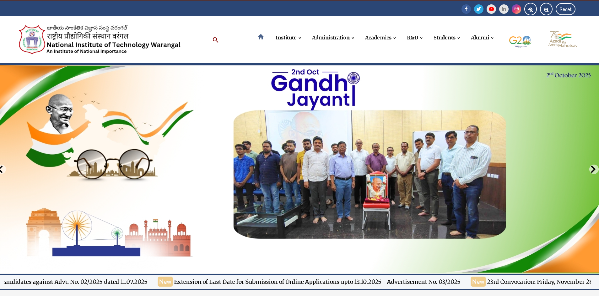

NIT Warangal Website Development

Developed and currently managing the back-end, front-end, and admin panel for NIT Warangal's official website and associated applications, ensuring seamless user experience and operational efficiency.
My Responsibilities
- Spearheaded the design and development of three applications: one backend (Node.js) and two frontend applications (React), ensuring robust architecture and efficient workflows
- Successfully managed the upgrade of the entire tech stack from Node.js 16 to Node.js 22.12 (LTS), resolving compatibility issues and enhancing performance
- Designed and developed the admin panel, enabling efficient management of website content, user access, and other administrative functionalities
- Collaborated with stakeholders to gather and analyze requirements, tailoring solutions to meet specific needs for both user-facing and administrative components
- Implemented secure authentication and authorization protocols to ensure data protection and prevent unauthorized access across all applications
- Conducted performance optimization and troubleshooting, resolving issues related to security, scalability, and functionality
- Upgraded dependencies and ensured compatibility with modern frameworks and libraries, including React and related tools
- Engaged with end-users to gather feedback, incorporating changes to improve user experience and meet evolving requirements
- Documented all APIs and application features, enabling streamlined development, integration, and future scalability
Tech Stack
- Frontend: React.js, HTML5, CSS3, JavaScript (ES6+)
- Backend: Node.js (v22.12 LTS), Express.js
- Database: MongoDB
- Authentication: JWT, OAuth
- Version Control: Git, GitHub
- Deployment: AWS EC2, S3, CloudFront
The website serves as the primary digital presence for NIT Warangal, providing information to students, faculty, staff, and visitors while maintaining high standards of performance, security, and user experience.
I would appreciate any feedback or welcome any questions you might have. You can find my contact information on the homepage.
↑ Go to Top